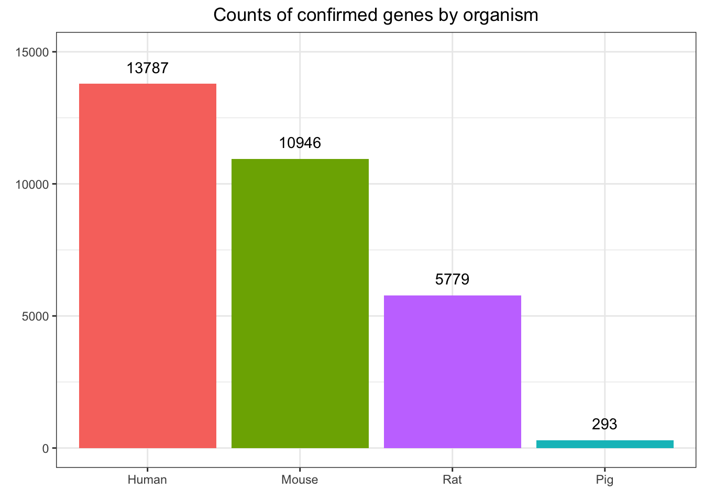
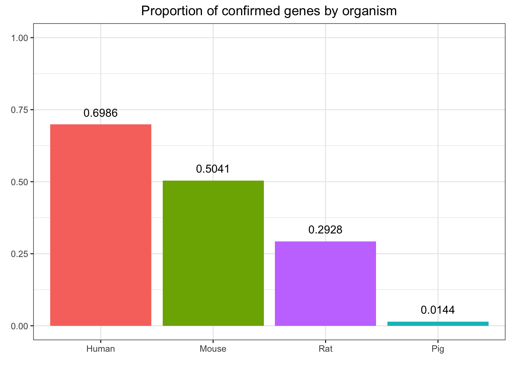

We begin by defining the read.gaf function to help us read in the data. The data is in gaf format. We use read.delim instead of read.table because using read.table(..., sep = '\t') produced some parsing errors.
read.gaf <- function(file){
gaf_colnames <- c("DB", "DB_Object_ID", "DB_Object_Symbol", "Qualifier", "GO_ID", "DB:Reference", "Evidence Code",
"With (or) From", "Aspect", "DB_Object_Name", "DB_Object_Synonym", "DB_Object_Type",
"Taxon and Interacting taxon", "Date", "Assigned_By", "Annotation_Extension", "Gene_Product_Form_ID")
return(as.data.table(read.delim(file, col.names = gaf_colnames, sep = "\t", comment.char = "!", header = FALSE, stringsAsFactors = FALSE)))
}We then read in the gene annotation information for humans, mice, rats, and pigs:
human.gaf <- read.gaf("./data/hw4/goa_human.gaf")
mouse.gaf <- read.gaf("./data/hw4/goa_mouse.gaf")
rat.gaf <- read.gaf("./data/hw4/goa_rat.gaf")
pig.gaf <- read.gaf("./data/hw4/goa_pig.gaf")
gaf_list <- list(human.gaf, mouse.gaf, rat.gaf, pig.gaf)We say that a protein is experimentally verified if one of the experimental evidence codes appears in the Evidence.Code column for any of its forms. Experimental evidence codes are EXP, IDA, IPI, IMP, IGI, and IEP. The count_experimentally_confirmed_genes function counts the number of experimentally confirmed genes found in a gaf table:
count_experimentally_confirmed_genes <- function(gaf){
experimental_evidence_codes <- c("EXP", "IDA", "IPI", "IMP", "IGI", "IEP")
return(n_distinct(gaf[gaf$Evidence.Code %in% experimental_evidence_codes, "DB_Object_ID"]))
}We use the count_experimentally_confirmed_genes function to get confirmed counts for each species:
counts <- as.numeric(unlist(lapply(gaf_list, count_experimentally_confirmed_genes)))
organism <- c("Human", "Mouse", "Rat", "Pig")
experimentally_confirmed_genes_info <- data.frame(Organism = organism, Counts = counts)And the counts per species:
experimentally_confirmed_genes_info %>%
kable(digits = 4) %>% kable_styling(bootstrap_options = "striped", full_width = FALSE) | Organism | Counts |
|---|---|
| Human | 13787 |
| Mouse | 10946 |
| Rat | 5779 |
| Pig | 293 |
To answer this question, we consider separately number of genes experimentally confirmed and the proportion of genes experimentally confirmed.
We generated this data in the previous question and saw that humans lead have the high count of experimentally confirmed genes. We visualize that here.
experimentally_confirmed_genes_info %>%
ggplot(aes(x = reorder(organism, -counts), y = counts, fill = organism)) +
geom_bar(stat = "identity") + geom_text(aes(label= ..counts.. ), vjust = -1) +
labs(x = element_blank(), y = element_blank(), title = "Counts of confirmed genes by organism") +
theme_bw() +
theme(plot.title = element_text(hjust = 0.5), legend.position = "none") +
ylim(0, 15000)
We define the proportion_experimentally_confirmed_genes function to calculate the desired quantity.
proportion_experimentally_confirmed_genes <- function(gaf){
experimental_evidence_codes <- c("EXP", "IDA", "IPI", "IMP", "IGI", "IEP")
return(n_distinct(gaf[gaf$Evidence.Code %in% experimental_evidence_codes, "DB_Object_ID"]) /
n_distinct(gaf$DB_Object_ID))
}We then use this function to calculate the proportion of confirmed genes by organism:
proportion <- as.numeric(unlist(lapply(gaf_list, proportion_experimentally_confirmed_genes)))
experimentally_confirmed_genes_info$Proportion <- proportionWe see in the accompanying plot that humans also lead in the the proportion of confirmed genes.
experimentally_confirmed_genes_info %>%
ggplot(aes(x = reorder(organism, -proportion), y = proportion, fill = organism)) +
geom_bar(stat = "identity") +
labs(x = element_blank(), y = element_blank(), title = "Proportion of confirmed genes by organism") +
theme_bw() +
theme(plot.title = element_text(hjust = 0.5), legend.position = "none") + ylim(0, 1) +
geom_text(aes(label = sprintf("%0.4f", ..proportion..)), vjust = -1)